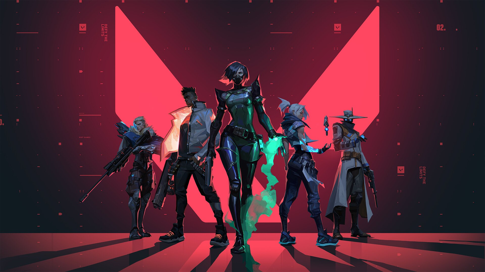
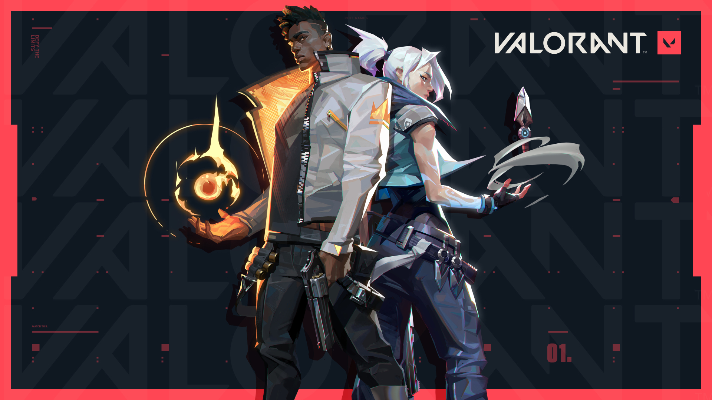
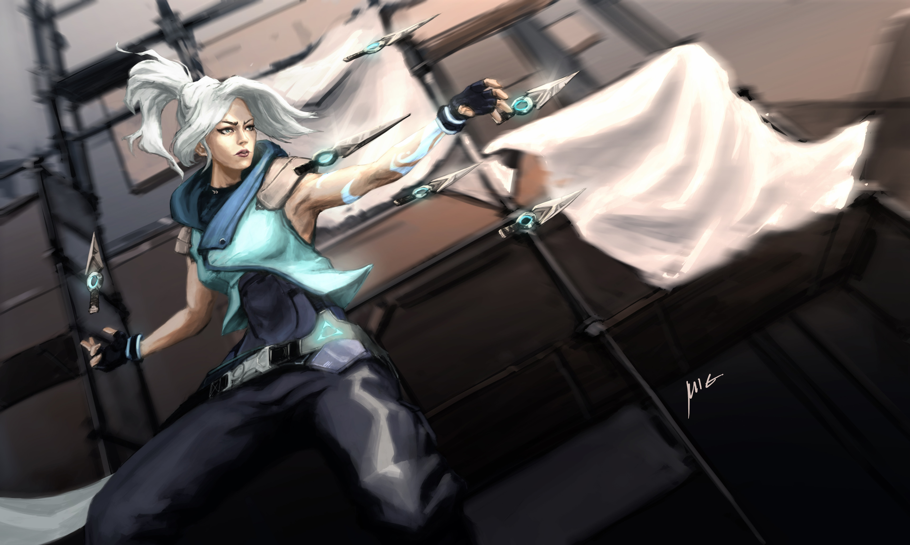

VALORANT este un shooter gratuit dezvoltat și publicat de Riot Games, pentru Microsoft Windows. La început jocul a fost dezvoltat sub numele de cod Project A în octombrie 2019, jocul a început o perioadă beta cu acces limitat pe 7 aprilie 2020, urmată de lansare oficială pe 2 iunie 2020. Dezvoltarea jocului a început în 2014.
Gameplay: VALORANT este un shooter tactic bazat pe echipe de tip First-Person Shooter în care acțiunea se desfășoară în viitorul apropiat. Jucătorii joacă ca un set de agenți, personaje concepute pe baza mai multor țări și culturi din întreaga lume. În modul principal de joc, jucătorii sunt repartizați fie echipei de atac, fie apărării, fiecare echipă având cinci jucători. Agenții au abilități unice, fiecare necesitând taxe, precum și o abilitate finală unică, care necesită încărcarea prin ucideri, decese sau plantarea bombei. Jucătorul începe fiecare rundă cu un pistol „clasic” și una sau mai multe abilități. Alte taxe pentru arme și abilități pot fi achiziționate folosind un sistem economic din joc care acordă bani pe baza rezultatului rundei anterioare, a oricăror ucideri de care este responsabil jucătorul și a oricăror acțiuni întreprinse cu bomba. Jocul are un sortiment de arme, inclusiv arme secundare, cum ar fi armele laterale și arme primare, cum ar fi mitraliere, puști de asalt și puști cu lunetă. Există arme automate și semi-automate care au un model de tragere care trebuie controlat de jucător pentru a putea nimeri cu precizie. Agenții le permit jucătorilor să găsească mai multe modalități de a planta Spike-ul . În prezent, există 15 agenți dintre care poți alege: Brimstone, Phoenix, Sage, Sova, Viper, Cypher, Reyna, Killjoy, Breach, Omen, Jett, Raze, Skye, Yoru și Astra.
 Unrated: În modul standard , meciul se joacă cel mai bun din 25 - prima echipă care câștigă 13 runde câștigă meciul. Echipa atacatoare are un dispozitiv de tip bombă numit Spike. Aceștia trebuie să livreze și să activeze Spike pe una dintre locațiile multiple specificate (site-urile cu bombe). Dacă echipa atacantă protejează cu succes Spike-ul activat timp de 45 de secunde, detonează, distrugând tot ce se află într-o anumită zonă și primesc un punct. Dacă echipa apărătoare este capabilă să dezactiveze Spike-ul, sau cronometrul rundei de 100 de secunde expiră fără ca echipa atacantă să activeze Spike-ul, echipa apărătoare primește un punct. Dacă toți membrii unei echipe sunt eliminați înainte ca Spike-ul să fie activat sau dacă toți membrii echipei în apărare sunt eliminați după ce Spike-ul este activat, echipa adversă câștigă un punct. Dacă ambele echipe câștigă 12 runde se mai joacă o rundă în care echipa câștigătoare a acelei runde câștigă meciul, diferind de prelungirile pentru meciurile competitive. În plus, dacă după 4 runde, o echipă dorește să renunțe la acel meci, poate solicita un vot pentru predare. Dacă votul este unanim, echipa câștigătoare primește tot creditul de victorie pentru fiecare rundă necesară pentru a le aduce la 13, echipa care a pierdut creditul primește credit pierdut. O echipă primește doar două șanse de predare: una ca atacatori și cealaltă ca apărători.
Spike Rush: În modul Spike Rush, meciul se joacă cel mai bun din 7 runde - prima echipă care câștigă 4 runde câștigă meciul. Jucătorii încep runda cu toate abilitățile complet încărcate, cu excepția ultimatei, care se încarcă de două ori mai repede decât în jocurile standard. Toți jucătorii echipei atacante poartă un Spike, dar poate fi activat un singur Spike pe rundă. Armele sunt randomizate în fiecare rundă și fiecare jucător începe cu aceeași armă. Sunt prezente orb-urile pentru ultimată din jocul standard, dar în schimb există mai multe tipuri de orb-uri.
Competitiv: Meciurile competitive sunt aceleași ca și meciurile unrated, cu adăugarea unui sistem de clasare bazat pe câștig, care atribuie un rang fiecărui jucător după 5 jocuri jucate. Înainte de a putea juca în jocuri competitive, va trebui să câștigi în prealabil 10 meciuri unrated. În iulie 2020, Riot a introdus o condiție de "victorie cu două" pentru meciurile competitive, unde în loc să joace o singură rundă în plus la 12-12, echipele vor alterna rundele de atac și de apărare în prelungiri, până când o echipă asigură un avantaj de două runde. Fiecare rundă în plus oferă jucătorilor aceeași sumă de bani pentru a cumpăra arme și abilități, precum și aproximativ jumătate din taxa de ultimată. După fiecare grupă de două runde, jucătorii pot vota pentru a încheia jocul la egalitate, necesitând 6 jucători după primul set, 3 după al doilea și, ulterior, doar 1 jucător să accepte o remiză. Sistemul de clasare competitiv variază de la iron la radiant. Fiecare rang, dar immortal și radiant are 3 niveluri.
Deathmatch: Modul Deathmatch a fost introdus la 5 august 2020. 14 jucători intră într-un meci de 9 minute gratuit pentru toți și prima persoană care ajunge la 40 de ucideri sau jucătorul care are cele mai multe ucideri la sfârșitul timpului câștigă meciul. Jucătorii apar cu un agent aleatoriu, iar toate abilitățile sunt dezactivate în timpul meciului, ceea ce duce la un joc de armă pur. Pachetele de sănătate verzi cad pe fiecare ucidere, ceea ce îl determină pe jucător la maximum de sănătate, armură și muniție, cu excepția cazului în care jucătorul folosește o mitralieră, care îi dă jucătorului doar 30 de gloanțe suplimentare.
Escalation: Modul de joc Escalation a fost introdus în februarie 2021 și este similar cu conceptul „gungame” din Counter-Strike și Call of Duty: Black Ops, deși este mai degrabă bazat pe echipă decât gratuit pentru toți, cu 5 jucători pe fiecare echipă. Jocul va alege o selecție aleatorie de 12 arme pentru a trece. Ca și în cazul altor versiuni de gungame, o echipă trebuie să obțină un anumit număr de ucideri pentru a avansa la următoarea armă, iar armele se înrăutățesc progresiv pe măsură ce echipa trece prin ele. Există două condiții de câștig, o echipă trebuie să treacă prin aceste niveluri sau dacă o echipă se află la un nivel mai înalt decât echipa adversă în 10 minute. La fel ca Deathmatch, jucătorii apar ca un agent aleatoriu, incapabili să folosească abilități, deoarece modul de joc este setat pentru lupte cu arme pure. Cu toate acestea, abilități precum săgețile de șoc ale lui Sova, botul cu braț al lui Raze și lansatorul de rachete, sunt abilități pe care toată lumea ajunge să le folosească ca armă. După uciderea unui jucător apar pachetele de sănătate verzi, acestea completează sănătatea, armura și muniția jucătorului la maximum. Modul de joc are, de asemenea, reîncărcări automate, reapărând jucătorii în locații aleatorii din jurul hărții.